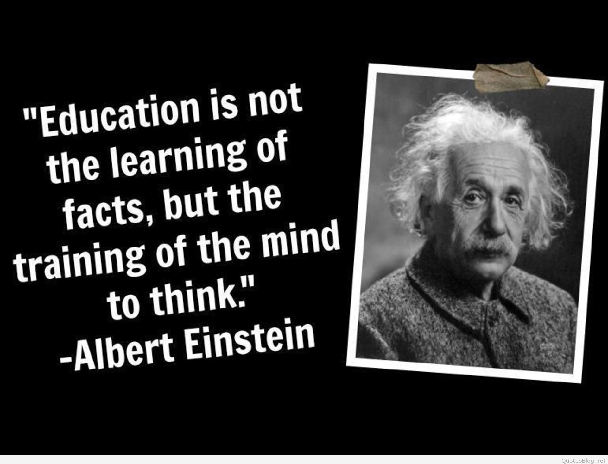

Albert Einstein
(1879-1955)
A man who never stops working

Albert Einstein has changed the world of Science in the the early 1900s. Beside his ginormous numbers of inventions, Einstein published thousands of scientifics books and articles.
Here's the list of his amazing scientific theories and inventions
- 1905 - Annus Mirabilis papers
- Statistical mechanics
- Thermodynamic fluctiations and statistical physics
- Theory of critical opalescence
- Special relativity
- General relativity
- General relativity and the equivalence principle
- Gravitational waves
- Hole argument and Entwurf theory
- Physical cosmology
- Energy momentum pseudotensor
- Wormholes
- Einstein-Cartan theory
- Equation of motion
- Old quantum Theory
- Photons and enery quanta
- Quantized atomic vibrations
- Adiabatic principle and action-angle variables
- Bose-Einstein statistics
- Wave-particle duality
- Zero-point energy
- Stimulated emission
- Matter waves
- Quantum mechanics
- Einstein's onjections to quantum mechanics
- Einstein-Podolsky-Rosen paradox
For more information about his incredible works, pay some time to visit his Wikipedia page